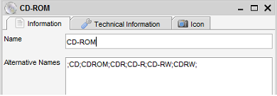

Item Form for Property Items
Menu Path > File > New (CTRL-N)
The item form shows a single item, new or existing. The form allows you to create, update, or delete an item.
The general function of the item form is explained here. This small chapter
covers the description of one field in particular, the "Alternative names" field. This field is only available and used
for property items.

In the above example I have created a Storage Medium called 'CD-ROM'. Now, from external sources such as the
online search I will get all kinds of other values. Amazon.com might say CDROM or CD for example. To map these values
to this property you'll enter the values into the "Alternative Names" field.
The values need to be separated by a semicolon (;). In the example above I have set up the following alternative names;
;CD;CDROM;CDR;CD-R;CD-RW;CDRW;
As you can see, the listing starts with a semicolon and is closed with a semicolon as well. With the information above
Data Crow will match "CD", "CDROM" and the other values to the CD-ROM item I've created, keeping my storage media listing
condensed.